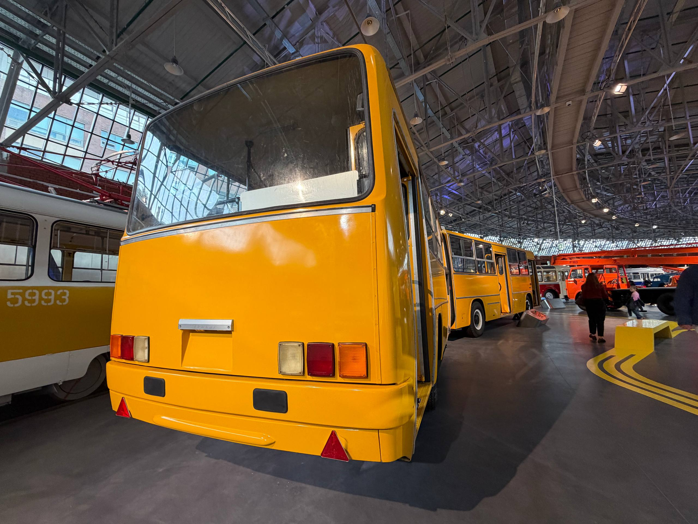
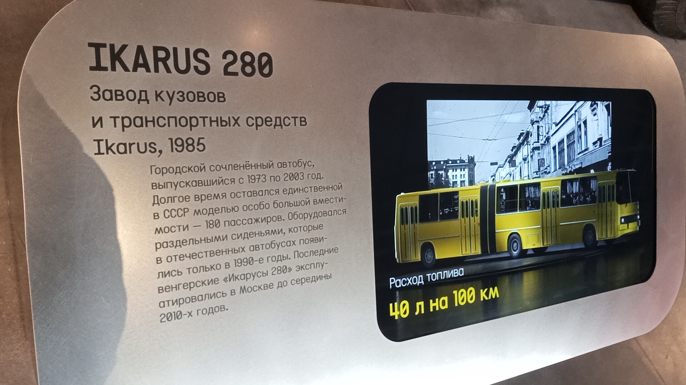
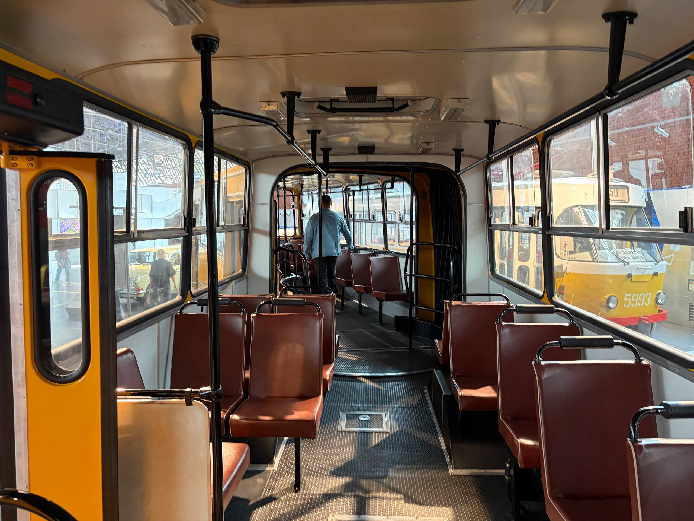
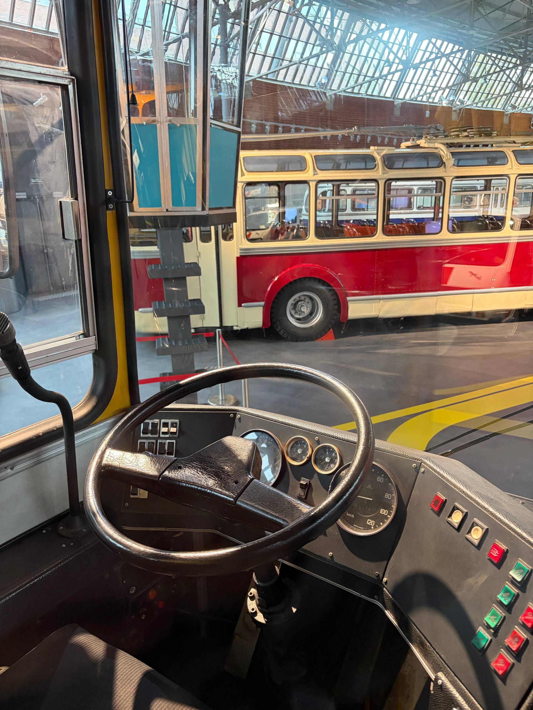

Ikarus 280 №05408
Перед вами городской сочленённый автобус, выпускавшийся с 1973 по 2003 год. Долгое время он оставался единственной в СССР моделью особо большой вместимости — 180 пассажиров.
Данный экземпляр (бортовой № 05408) выпущен в 1985 году. Это один из немногих экспонатов музея, в который можно войти и своими глазами увидеть салон легендарной «гармошки».
Общая информация
| Параметр | Значение |
|---|---|
| Город | Москва 🇷🇺 |
| Транспортная компания | Музей Транспорта Москвы |
| Модель | Ikarus 280.00 |
| Год выпуска | 1985 |
| Заводской № | 135 |
| VIN | 280.00.135.85 |
| Госномер | ве855 77 |
| Бортовой № | 05408 |
| Поступил | 09.2007 |
| Текущее состояние | Памятник / Музейный |
Технические характеристики
Основные параметры
Длина: 16,5 м
Ширина: 2,5 м
Высота: 3,16 м
Сухая масса: 12 580 кг
Вместимость: 180 пассажиров
Силовая установка
Двигатель: Rába-MAN (лицензионный)
Расположение: под полом салона, в базе
Высота пола: 920 мм
Расход топлива: 40 л / 100 км
История экспоната
Начало выпуска модели
В 1973 году началось серийное производство Ikarus 280. Модель стала частью нового 200-го семейства с единой агрегатной базой.
Выпуск экспоната
Именно эта машина (заводской № 135) сошла с конвейера завода Ikarus в 1985 году. Она успела застать расцвет эпохи «гармошек» на улицах советских городов.
Поступление в музей
Автобус поступил в Музей Транспорта Москвы.
Ожидание восстановления
На Сокольническом вагоноремонтном заводе (СВАРЗ) автобус ожидал восстановления. Табличка на лобовом стекле подтверждала его музейный статус.
Сохранение для истории
Данный экземпляр занял достойное место в экспозиции Музея Транспорта Москвы. В него можно войти.
Особенности конструкции
Сочленённая конструкция
Две секции кузова, соединённые шарнирным узлом. Двигатель расположен под полом салона.
Раздельные сиденья
Автобус оборудовался раздельными сиденьями, которые в отечественных автобусах появились только в 1990-е годы.
Широкие двери
Высота пола 920 мм увеличивала время посадки-высадки. Чтобы компенсировать эту проблему, все пассажирские двери сделали максимально широкими.
Доступ внутрь
Экспонат является одним из немногих, в который можно войти. Вы можете увидеть салон, посидеть на сиденьях и оценить планировку.
Фотогалерея

📌 Музей Транспорта Москвы.
Общий вид экспоната.

📌 Музей Транспорта Москвы.
Другой ракурс.

📌 Музей Транспорта Москвы.
Музейная информация.

📌 Музей Транспорта Москвы.
Салон, вид назад.

📌 Музей Транспорта Москвы.
Кабина водителя.
Нажмите на фото для увеличения
«Долгое время Ikarus 280 оставался единственной в СССР моделью особо большой вместимости — 180 пассажиров. Последние венгерские "Икарусы 280" эксплуатировались в Москве до середины 2010-х годов».